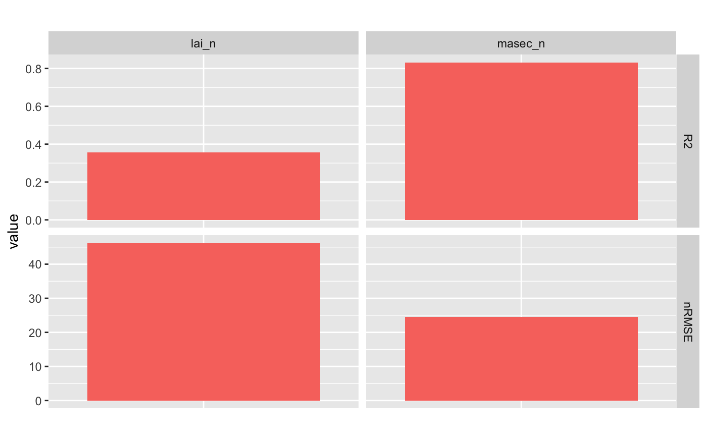
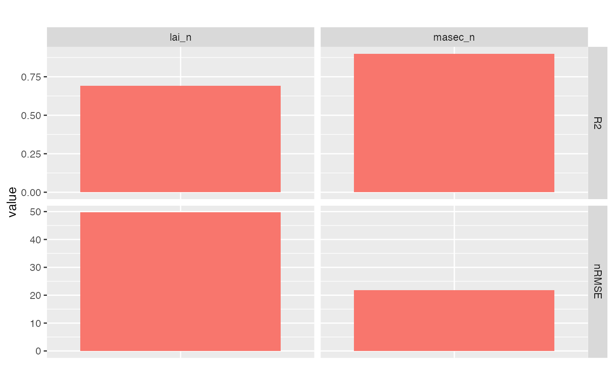

Plot statistics
# S3 method for statistics
plot(
x,
xvar = c("group", "situation"),
type = c("bar", "radar"),
group_bar = c("rows", "stack", "dodge"),
crit_radar = NULL,
title = NULL,
force = TRUE,
verbose = TRUE,
...
)| x | The output of |
|---|---|
| xvar | The variable to use in x, either the group or the situation (the other is used for colouring) |
| type | The type of plot requested, either "bar" (bar plot) or "radar" (radar chart) |
| group_bar | Way to display the different statistical criteria when |
| crit_radar | Statistical criterion chosen to be displayed on the radar chart. |
| title | The plot title |
| force | Continue if the plot is not possible ? E.g. no observations for scatter plots. If |
| verbose | Boolean. Print information during execution. |
| ... | Other arguments to pass (for backward compatibility only) |
Return a ggplot object with statistics
The group_bar argument can be:
"rows" (the default): One line of graphs per statistical criterion
"stack": Bars of each statistical criterion stacked
"dodge": Bars of each statistical criterion side by side
# Importing an example with three situations with observation:
workspace= system.file(file.path("extdata", "stics_example_1"), package = "CroPlotR")
situations= SticsRFiles::get_usms_list(usm_path = file.path(workspace,"usms.xml"))
sim= SticsRFiles::get_daily_results(workspace = workspace, usm_name = situations)
#> [1] "mod_sSC_Pea_2005-2006_N0.sti"
#> [1] "mod_sSC_Wheat_2005-2006_N0.sti"
#> pIC_Wheat_Pea_2005-2006_N0 aIC_Wheat_Pea_2005-2006_N0
#> "mod_spIC_Wheat_Pea_2005-2006_N0.sti" "mod_saIC_Wheat_Pea_2005-2006_N0.sti"
obs= SticsRFiles::get_obs(workspace = workspace, usm_name = situations)
#> [1] "SC_Pea_2005-2006_N0.obs"
#> [1] "SC_Wheat_2005-2006_N0.obs"
#> IC_Wheat_Pea_2005-2006_N0p IC_Wheat_Pea_2005-2006_N0a
#> "IC_Wheat_Pea_2005-2006_N0p.obs" "IC_Wheat_Pea_2005-2006_N0a.obs"
# R2 and nRMSE stats for the simulation:
stats= summary(sim, obs= obs, stat= c("R2","nRMSE"))
plot(stats)
#> Warning: `guides(<scale> = FALSE)` is deprecated. Please use `guides(<scale> = "none")` instead.

# Change the group name:
stats= summary("stics v9.0"= sim, obs= obs, stat= c("R2","nRMSE"))
plot(stats)
#> Warning: `guides(<scale> = FALSE)` is deprecated. Please use `guides(<scale> = "none")` instead.

# R2 and nRMSE stats for two groups of simulations:
summary(sim1= sim, sim2= sim, obs=obs, stat= c("R2","nRMSE"))
#> # A tibble: 4 × 5
#> group situation variable R2 nRMSE
#> <chr> <chr> <chr> <dbl> <dbl>
#> 1 sim1 all_situations lai_n 0.692 49.7
#> 2 sim1 all_situations masec_n 0.899 21.8
#> 3 sim2 all_situations lai_n 0.692 49.7
#> 4 sim2 all_situations masec_n 0.899 21.8